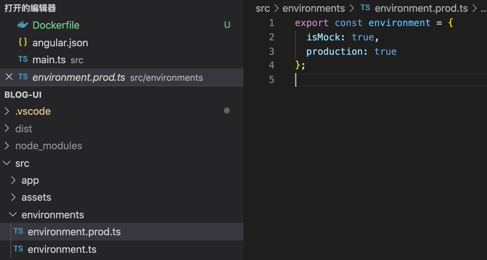
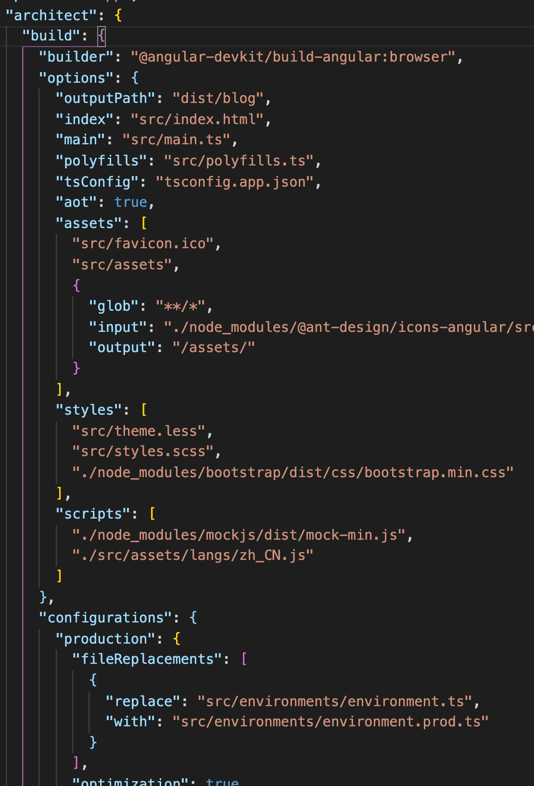
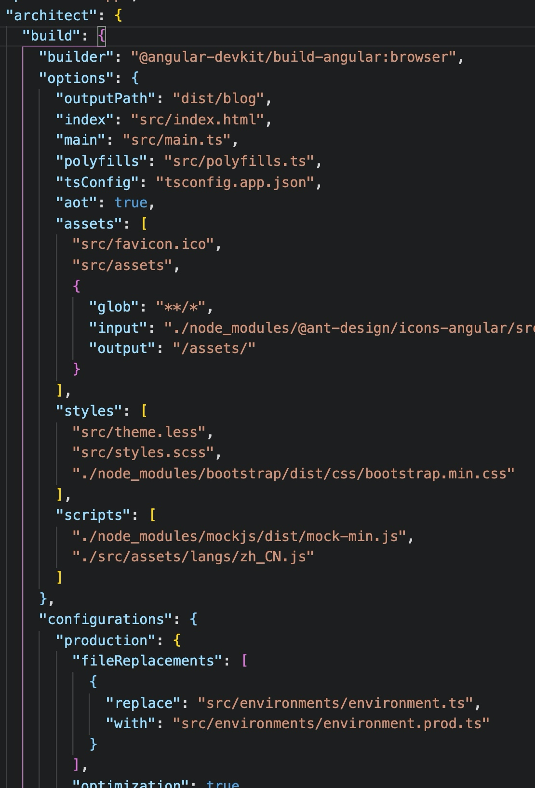
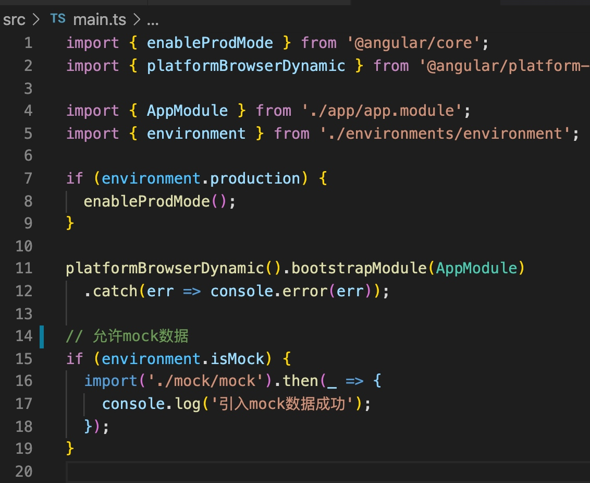
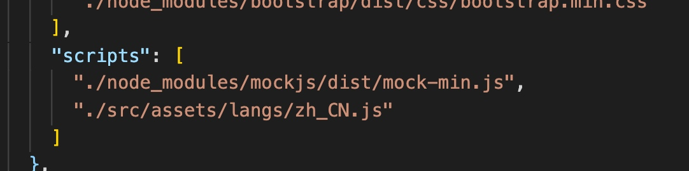

angular mock的使用
前言
在现在公司中，并没有真的前后端分离，往往是前后端一同疏通测试，美其名曰节省时间全面发展。因此至今没有单独写过mock进行前端自己的单体测试。这一次调查下mock的使用。
Angular的environments文件

environments文件分别是每个环境对应的配置。
每个文件与环境的对应关系存放于angular.json中。

这个设定指定了cli在进行production build的时候将environment.ts替换成environment.prod.ts，即将开发环境的环境配置替换成生产环境的开发配置。
在这里设置isMock属性，让mock在生产环境中自动启动，开发环境~~~~中自动关闭。
Angular的main.ts文件

同样在cli中webpack的入口程序被设置为src/main.ts，也就是说main.ts是我们整个angualr的入口程序。我们在这里判断当前环境是否引入mock服务。

mock服务的实现
1.选择自己的包管理器添加mock的指令安装mock
npm install mockjs --save
yarn add mockjs
2.创建mock文件，并添加到打包配置文件中
又是angualr.json，在scripts中添加自己的mock文件路径，让webpack打包angular时同时打包我们的mock文件。

3.编写mock服务
首先导入mockjs。
import * as Mock from 'mockjs';然后拦截请求，返回假数据
Mock.mock('http://localhost:9080/list', { message: '调用成功',
'data|10': [{
'id|+1': 1,
title: 'This is a title',
tags: [
{
id: 1,
name: 'aaaa',
color: 'red'
}
],
'note|100': 'There are notes!'
}]
});
结语
angular中如何加载mock服务就到这，mock中的精髓是通过代码来生车给你数据，这些还需要细读一下API。这次记录是通过编译打包时的顺序来记录mock的使用方法，今后需要更深入的理解angular要多多从这个方向调查问题。